NAME = Matthew Somritjinda
STATUS = AI developer, Researcher
CURRENT PROJECT(s) = Bio Log, Bangboo, Morgana Bot
I made a local RAG architecture that can ingest and store information from the web. The personality is based off of Senku Ishigami from the anime, Dr. Stone. It can answer questions about science and technology, as well as provide explanations and summaries of scientific concepts. It uses a web crawler to scrape data, which is then processed and stored in a vector database for quick retrieval. This is my first attempt at building a RAG architecture, and it was a great learning experience. I completed it in 16 days (08/13/2026 - 08/29/2026) and I continue to update it.
I made a self balancing inverted pendulum robot that is based off of Morgana from the videogame, Persona 5 Royal. I used a custom PID controller to balance the robot using an IMU sensor fusion algorithm. This project is still in progress, as I am waiting for the hardware to arrive so that I can test and tune the controller. Updates will be on my Github page, which is linked below.
I am currently conducting field sampling and microscopic cataloging of native freshwater microorganisms collected across Black Mountain and Montreat, NC. I am documenting behavior, images, and species characteristics.
I am currently designing a bipedal robot that is based off of the Bangboo from Zenless Zone Zero. It will be trained to walk using reinforcement learning. I am also designing custom metal motor housings that will be used to house the motors and provide a rigid structure for the robot.